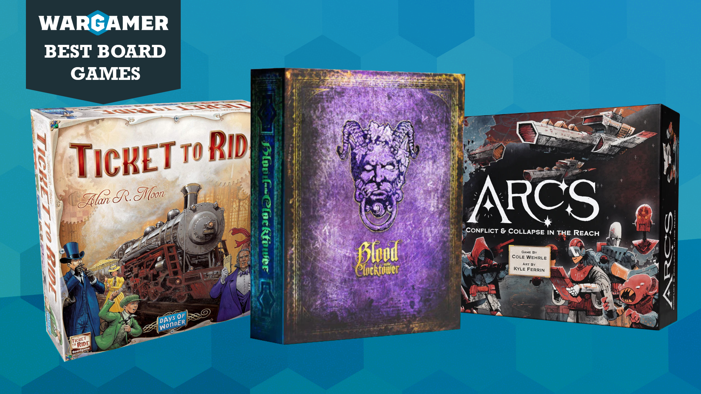
The 50 best board games that every fan should play, updated for 2026
New board games come and go, but the best board games of all time do something special to capture our hearts. Perhaps they nail a genre so hard that they become our new comfort game. Maybe they're innovative, capable of changing how we think about board games as an art form. Or maybe they're so strategically rich that we can play them over and over and never grow bored.
Why you can trust us ✔ We spend hours testing games, toys, and services. Our advice is honest and unbiased to help you buy the best. Find out how we test.
For the last four years, it's been my job to track the top board games releasing each year. That means I spend every day thinking about board games. I spend every week testing new products, and I spend every year updating our list of the very best titles. This list of excellent games lives rent-free in my head, and I'm dying to share it with you.
Below you'll find the 50 best board games of 2026 that a hardcore hobbyist absolutely must play. The first 10 will always be new board games released this year or last year. After that, I've split the all-timers into smaller top 10 lists, addressing common board game categories.
These are the best board games:
- Best board games of 2026
- Best board games for beginners
- Best strategy board games
- Best thematic board games
- Best board games for families
Best board games of 2026
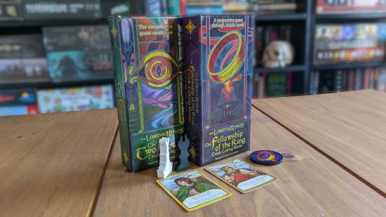
It's still early in the year, and many of 2026's very best board games haven't even come out yet! As such, this list currently includes my favorite releases of last year, too - but we're constantly updating it with the latest hotness.
The Lord of the Rings Trick-Taking Game
There are many fantastic board games set in Middle-Earth, but The Lord of the Rings Trick-Taking Game has quickly become one of my favorites. This trilogy of board games (of which the first two have released) retells the entire saga of The One Ring as a co-op trick-taking card game.
Players control one or more key figures from the story, each with their own goals and abilities. You must complete every character's mission to finish the chapter, and as you advance, this becomes ever more challenging. The Fellowship of the Ring and The Two Towers are both thoughtful and frankly gorgeous board games that reward careful cooperation. Seriously, don't skip these.
Read our Two Towers Trick-Taking Game review to learn more.
The Old King's Crown
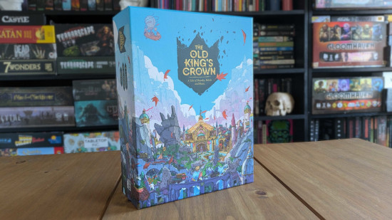
The Old King's Crown is, according to Wargamer editor Alex,"the most captivating board game I've ever played". He will not stop going on about it.
The Old King's Crown combines whip-smart pacing, beautifully balanced strategy, and a gorgeous fantasy theme. It's a tapestry woven from all manner of board game genres, though its core loop is as simple as it gets: players lay down cards, and the highest number wins.
Each round, you'll play three of these card clashes, aiming to rack up victory points. But in order to win (and keep winning) clashes, you've also got to play the wider strategy game: a scrumptious, layered lasagna of deck-building, engine-building, worker placement, and bluffs galore. Every decision counts, and The Old King's Crown keeps you captivated until the very end.
Read our The Old King's Crown review to learn more.
Moon Colony Bloodbath
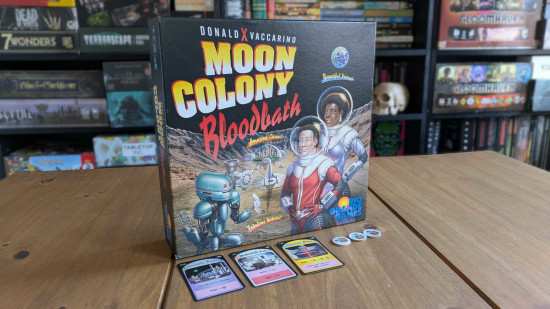
A clever, good-looking, and accessible deck-builder, Moon Colony Bloodbath tasks you with building a successful moon base. The deck you build is communal, so - for good and ill - everyone's space colonies are in this together.
Easy-going at first, things swiftly devolve into chaos as that shared Progress deck throws up disaster after disaster. As the population begins to dwindle and your buildings start to crumble, the game transforms into a race to the bottom, where the only moon base with survivors wins.
As well as being delightfully entertaining, Moon Colony Bloodbath pokes fun at the hubris of short-sighted, for-profit moon missions. If the idea of an entirely fictional, legally distinct AI boosting billionaire getting disemboweled by rampaging robots appeals, give this bad boy a try.
Read our Moon Colony Bloodbath review to learn more.
Molly House
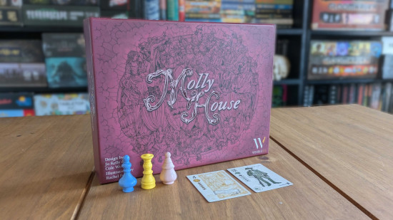
Molly House is an elegant, thematic game about joy, love, and persecution. You'll play as 18th-century Mollies, LGBTQ+ Londoners looking to throw parties, do a bit of shopping, hook up, and - most importantly - evade the law. Molly House can be fiddly at first, but its strategy and theme soon unfold like the plot of a dramatic novel.
It starts out as a co-op trick-taking game, where everyone cruises London, picking up beaus and earning reputation. Parties are thrown constantly, and everyone contributes cards to the trick-taking game to score as much joy as possible. Before long, though, threats arrive on the scene, and the Mollies must choose to fight for their community's joy - or turn traitor and expose their former friends.
You can learn more in our full Molly House review.
The Lord of the Rings: Fate of the Fellowship
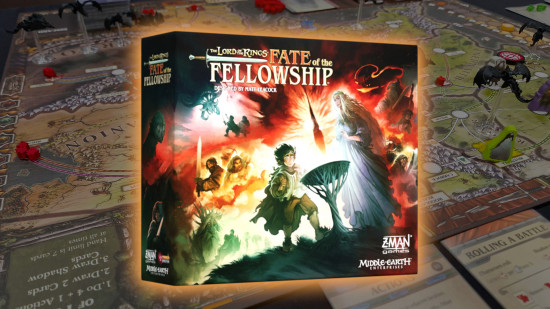
Though their themes couldn't be more different, The Lord of the Rings: Fate of the Fellowship shares a lot of DNA with Matt Leacock's previous masterpiece, Pandemic. In this thematic co-op, everyone has control of two famous Fellowship, and you'll use them and their unique powers to fend off enemy forces at key locations. All the while, you must conceal Frodo from the watchful Eye of Sauron and his Nazgûl buddies.
It's an excellent recreation of what makes Tolkien's original story so tense and exciting. Plus, it makes Pandemic's well-worn, decade-old gameplay feel fresh again.
Luthier
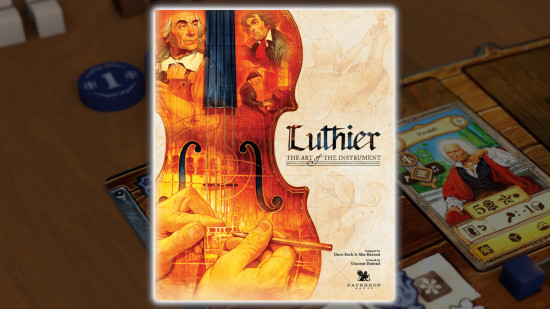
Luthier is for lovers of deep eurogames, with decisions that you can spend hours mulling over. You'll play as the titular luthiers, crafting quality musical instruments for the elites of the 18th century. Each customer has specific desires, and you only have so long to fulfill their orders before you lose their favor.
Worker placement plays a big role here, but so do bidding mechanics. With the best resources so scarce, you'll have to bid for the best outcomes and find ways to make your crafting process more efficient. With many paths to victory, Luthier is immensely deep and replayable - provided you have several hours to spare for each playthrough.
Hot Streak
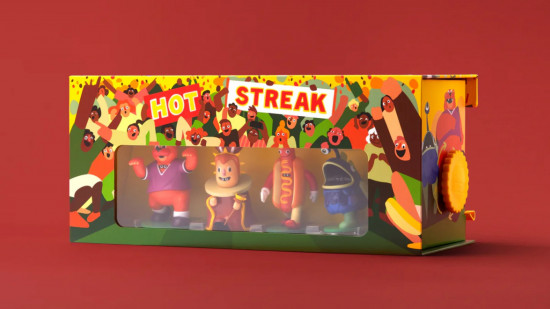
CMYK's Hot Streak is a sensational racing game that's as whimsical as it is somewhat unsettling to look at. This game goes all in on its status as a toy. Four 3D mascot runners, each delightfully more garish than the last, to place on a race track that rolls out of the box.
This is a simple betting game, where everyone takes turns drafting a bet for one of three races. Everyone also gets the chance to throw cards into the action deck, which determines how the runners will behave during the race. That naturally includes charging forward, but it also includes turning around, crashing into other competitors, falling over, or veering off the race course completely (and getting disqualified). Hilarity ensues so hard that you'll often forget that the point of playing is to win the most money.
Learn more in our Hot Streak review.
Magical Athlete
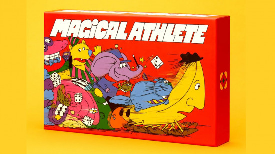
Boy, 2025 was a great year for racing games! In particular, those published by CMYK and that kind of hurt your eyes. Magical Athlete is a chaotic racing game where everyone controls their own contestant, each with wacky powers that can trigger an avalanche of other racer's powers when they go off. Win the most races, and you've won the game!
Magical Athlete is simple and extremely silly. Races can change in an instant thanks to some truly brutal powers, and you'll be hovering on the edge of your seat the whole time. It's far from strategic, and it's barely balanced, but it's a damn good time.
Vantage
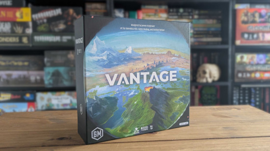
Vantage is an immersive choose-your-own adventure game about the joys of exploration. Players crash-land on different parts of a faraway planet, and they must describe their unique perspective as they take different journeys across its landscape.
Your turns focus on performing a variety of evocative actions at each location you visit, with dice rolls determining how taxing they are for your health, morale, and time. Vantage is stuffed with gorgeous art and delicious secrets to uncover, and each playthrough feels a little different.
A lack of win conditions and unusual pacing mean that Vantage won't be everyone's cup of tea. But for me, it's an innovative, meditative experience that I keep coming back to.
Learn more in the full Vantage review.
Star Wars: Battle of Hoth
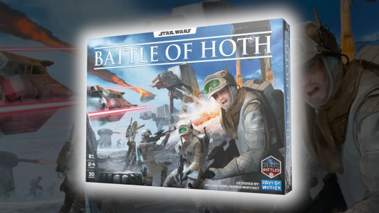
Star Wars: Battle of Hoth deploys the tried-and-tested rules of beloved WW2 game Memoir '44, bringing its intriguing yet accessible strategy to the snowy tundras of Hoth. Exactly like Memoir '44, this is a wargame where opposing forces of miniatures trade shots, driven by your unique hand of command cards.
Our editor Alex tested it at the UK Games Expo in 2025, and this is a cracking strategy game with easy-to-learn mechanics and oodles of Star Wars theme. A bit like the Millennium Falcon, this might look like a rust bucket of a design, but it's got power where it counts.
Best board games for beginners
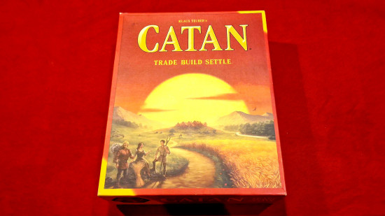
I want to make it clear: these aren't the best board games for beginners because they're easy. The entries here are just as engaging as any big-box strategy game with a billion minis. Instead, this mini-list recommends the games you should head for first if you want to get the best idea of what the modern board game hobby is. These approachable entries introduce you to key mechanics, and they're an important part of board gaming history.
Catan
First released in 1995 by beloved German designer Klaus Teuber, Catan has survived and thrived for decades. Players compete to dominate an island by building settlements near key resources - grain, ore, wool, lumber, and brick - so they can rake in resource cards every turn and spend them on expanding their empire. Things start off benign, but there's only room on this little island for one player to build the roads, cities, and extra buildings they need to win, so it gets competitive fast.
Because it's so simple, it's incredibly easy to go from not knowing the game at all to keenly working out your tactics and plotting how to outmaneuver your rivals. Strategy aficionados may sneer at Catan, but this famous game has a place in every collection - especially if your board gaming journey is just beginning.
Read our Catan review to learn more.
Ticket to Ride
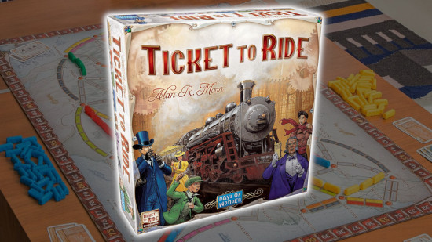
Ticket to Ride is many gamer's entry into the tabletop hobby, and for good reason. Simple yet surprisingly drama-filled, Ticket to Ride offers just enough strategy to dip your toe (or sink your teeth) into. The core premise is simple: collect train cards with matching colors and play them to claim a particular route on the map.
While everyone is vying for the longest route, each player also has a secret series of city-to-city journeys they must map to score points. To begin with, Ticket to Ride is calming and non-confrontational, but as the map grows crowded, competition quickly starts to heat up as you race to cut your friends off from their favored routes. It's a delicious tension hidden beneath a whimsical, colorful surface.
Read more in our Ticket to Ride review.
Pandemic
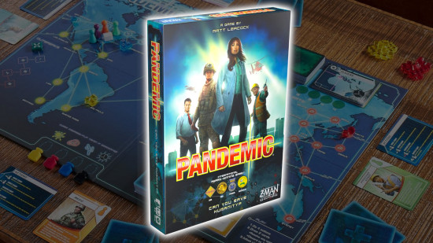
Few co-op games match the 2008 smash hit Pandemic, which nails team-based gameplay so damn hard that we're still playing over a decade later. In this game, four deadly, brightly colored diseases have each simultaneously infected a large part of the world map. Every turn, the diseases will spread quickly across the planet, and - as a team - you must plan out your limited actions to contain their growth and develop cures for all four as quickly as possible.
Be warned: while the rules aren't complicated, the game can be a genuine challenge, you'll have to learn to make the most of all your characters' abilities in combination with each other, while racing against disease outbreaks that can come at any time. Luckily, working together to achieve that is endlessly satisfying, and Pandemic is a genuine thrill every time we play.
Read more in our full Pandemic review.
Carcassonne
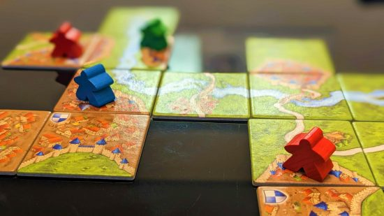
Carcassonne is the oldest board game in my collection, and I'll never get rid of it. It's like the perfect sandwich: quick, simple, balanced - yet surprisingly spicy. In more literal terms, it's a tile-laying game where you'll take turns adding a random tile to an ever-expanding, Medieval French landscape. Place your tile with care, and you can construct lengthy roads, sprawling cities, cozy priories, or lush farmland. These can then be claimed by a colorful meeple from your supply.
Here's where the spice comes in. With enough passive-aggressive turns, multiple meeples will be bickering about who controls a particular road or city. What begins as a calm laying of land becomes a bitter struggle for territory. I've had many arguments over the lay of the land in Carcassonne, and I've loved it every time. Simple, brutal, and effective.
Read our Carcassonne review to learn more.
Azul
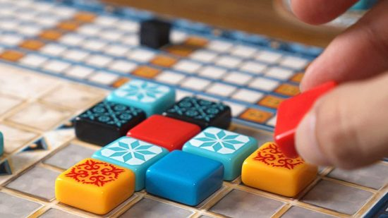
Azul is all about placing clack-y mosaic tiles in the most aesthetically pleasing - and highest-scoring - pattern. Each player has their own board, which they want to fill up with certain combinations of mosaic tiles. To obtain these, you'll take turns drafting from tile pools.
Drafting one color means you must take all matching tiles from that pool. These are then placed in a row beside your mosaic, which must be filled with matching tiles before one can be added to the final piece (and scored). But draft carefully, as any tiles you don't have room for spill over and become minus points.
The gameplay loop is oddly soothing, but the strategy hidden underneath quickly grows competitive. Half the fun is the cutthroat act of drafting the exact tile you know an opponent needs.
Read our Azul review to learn more.
Wingspan
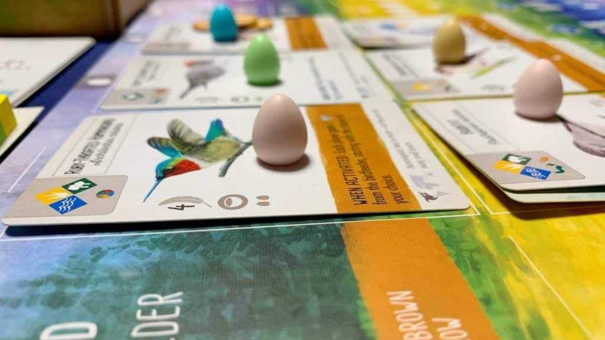
Wingspan is as satisfying as it is stunning. It's a surprisingly soothing engine-builder that sits perfectly between gateway game and intense strategy session. In Wingspan, you're aiming to attract as many beautiful birds to your habitat as possible. Gather bird cards, collect food, lay eggs, and spend your precious resources to build those birdies nests in the right habitats.
Many birds offer unique powers that, once they've been played, trigger when you perform other resource-gathering actions. Your board grows more powerful over time, and an efficient player can fill their entire board with point-scoring birds by the end-game. Specialize carefully, and you can craft some immensely valuable engines that'll have your opponents all a-flutter.
Read our Wingspan review to learn more.
Dominion
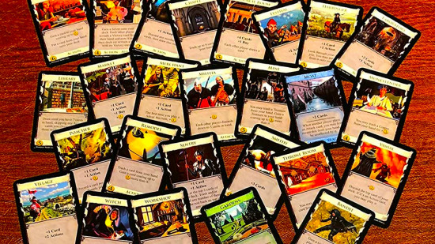
Dominion was the first-ever deck-building board game, and, in my opinion, it's still the best one. The premise doesn't take much explaining. Everyone starts with the same basic deck of cards, which they'll draw from to play cards each turn. Earn money, and you can buy unique cards from the market to modify your deck on future turns. Create enough money-earning combos, and you can start buying valuable plots of land worth victory points.
Dominion accommodates multiple gameplay styles, from the endless turn loop to 'take that!' curses that debuff opposing decks. No two decks ever quite play the same, and that's before you factor in Dominion's many expansions. This is an excellent introduction to a mechanic that changed the face of board gaming as we know it.
Scout
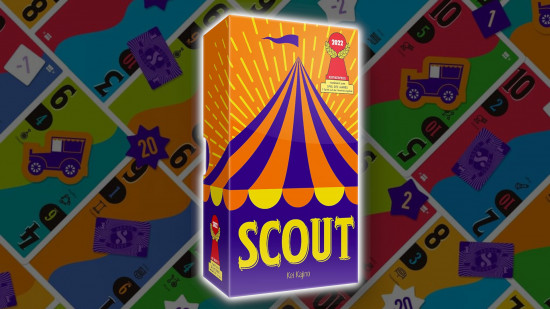
Scout is a smart, quick-playing card game that delights the eye and tickles the brain by twisting trick-taking on its head. On the surface, it resembles classic playing card games like Rummy or Whist. Collect or play cards on your turn to create matching or sequential sets of numbered cards. Points are up for grabs for emptying your hand first, or when other players add one of your previous plays to their hand.
Sounds simple, but there's a twist. You can't change the orientation or order of cards in your hand, so if you want to play a set that could win you the round, you've got to cluster those cards together first. This means you're not just playing against your opponents; you're also fighting the cards you're holding, trying to plan ahead to get the big plays you need.
Learn more in our full Scout review.
7 Wonders
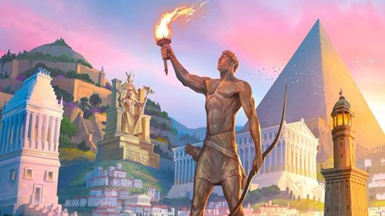
7 Wonders is a real crowd-pleaser, a strategic drafting board game that's truly absorbing, whatever level of board game experience you have. Each player competes to craft the most advanced ancient civilization. Across three ages, you'll draw a hand of cards and, simultaneously with other players, draft a card from it to play. Your hand passes on, and your neighbors then get a chance to grab any value you left behind.
Points come from many sources, whether it be your military might, your coffers of coin, your scientific advancements, or the wonder of the world you gradually build on your player board. Specialization is tempting, but the player who efficiently excels in every area tends to win the day.
The Quacks of Quedlinburg
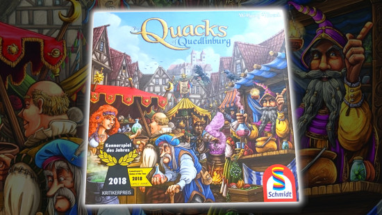
The Quacks of Quedlinburg is a chaotic push-your-luck game where bravery could net you big wins - or blow up in your face. Its subtly thoughtful design choices mean no bout of bad luck is ever too punishing, and the thrills of a well-played round will fill a room with energy. Better yet, it's simple enough that players of any age can enjoy it.
In Quacks, everyone takes their turn at the same time. You'll randomly draw chips from a bag to add to your swirling cauldron, hoping for the most valuable picks that will increase the points and cash you can claim. But if you pull too many white tokens from your bag, the concoction explodes, severely limiting your yield for that round.
Between brewing sessions, everyone will have a chance to spend their hard-earned money on new, more useful chips for their ingredients bag. With so many changing variables, Quacks of Quedlinburg is anyone's game to run away with - the question is, how much are you willing to bet on your brew?
Read our Quacks of Quedlinburg review.
Best strategy board games
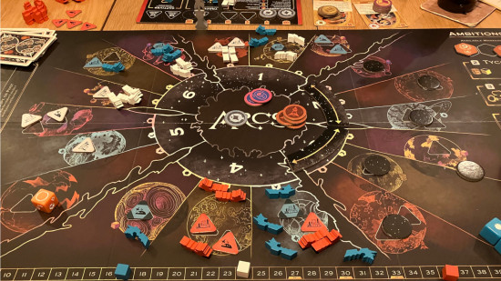
Maybe you're someone who delights in a plan well-placed. Perhaps your favorite part of gaming is crunching numbers or carrying out grand, multiple-turn strategies. Maybe words like 'eurogame' or 'crunch' or 'six-hour play time' get you hot under the collar. Or perhaps you've graduated from our list of beginner games, and you're looking to try something with a bit more complexity. Whatever your reasons, these are the mid-to-heavy strategy board games worth checking out.
Arcs
One-part space wargame and one-part trick-taking game, Arcs is a compact yet complex experience, where every turn can dramatically change the tide of play. New players may succumb to analysis paralysis thanks to Arcs' immense, interlocking systems. However, once you've understood its mechanics, Arcs is as tense and exciting as any space opera.
Everything you do in Arcs is determined by the cards you are dealt. The suits decide what actions you can take in a round, from aggressive movement and combat to careful construction jobs. The value of your card decides how much influence you have in the great space race - the highest-value card played lets its player take the maximum possible actions, leaving opponents to best their number or take a turn with reduced efficiency.
Players can also sacrifice the value of their card to declare an ambition. You lose your lead in the race, but playing an ambition you're likely to achieve is a great way to score points. Stockpile resources to score end-of-round points, and you're even more likely to steal an extremely gratifying win.
Learn more in our Arcs review.
Ark Nova
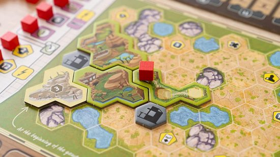
Ark Nova is a surprisingly realistic depiction of what it's like to manage a zoo. Over the course of an hour or two, you'll fill an empty hex grid with animal enclosures and concession stands that increase your appeal to visitors. Entertainment is only one part of zoo management, though, so you'll also need to juggle sponsorships and conferences to further your conservation work.
This is a complex, crunchy strategy game, so you'll need to juggle a range of mechanics to achieve your goals. Actions that change power levels, worker placement, hand management, and drafting all make up the rich tapestry of Ark Nova. It's highly rewarding, but it can be brutal too - it's totally possible to end the game with negative points.
Read our Ark Nova review to learn more.
Brass: Birmingham
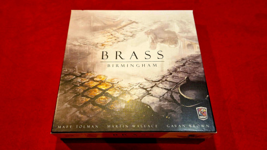
Brass: Birmingham is the ultimate game of industrial expansion, the kind of game that reveals more of its strategic intricacies with every game. You'll play as a titan of British industry, shepherding the city of Birmingham through two of its biggest trade revolutions: canals and railways.
Victory points are awarded to industry moguls who sell the most quality merchandise and build the best transport connections between their manufacturers. This is a through-and-through eurogame, so all other actions, from selling coal and iron at market to taking out loans, are in aid of streamlining and empowering your industrial machine.
Every action counts here. As businesses grow, the map gets more crowded, and you'll soon find yourself making reluctant partnerships with - or deliberately screwing over - your direct competitors. It's an enthralling machine that, while you may struggle to grasp all its moving parts at first, is a joy to watch whirr.
War of the Ring
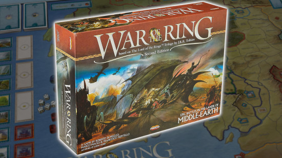
An hours-long tactical epic, the War of the Ring recreates Middle-earth's historic clash between the Free Peoples and Sauron's armies.
The Free Peoples race to muster political support and troops to overwhelm the armies of shadow, or at least hold them at bay long enough for Frodo and Sam to get the ring to Mount Doom. Meanwhile, the side of shadow hunts the ringbearer, hoping to corrupt him entirely or destroy the armies of good to clinch the win. All the action is resolved with tide-turning dice rolls and well-played event cards.
It's about as tense as a head-to-head can get, and though the rules are comprehensive and complex, it never feels like a slog. It helps a lot that this feels like such a faithful, thematic recreation of the events of The Lord of the Rings - even if your versions of these armies handle things slightly differently.
Gaia Project
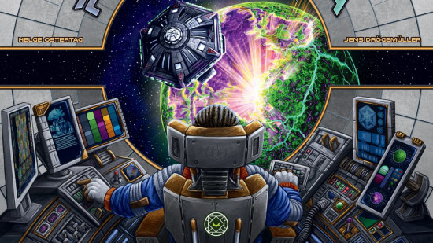
Terra Mystica is a classic eurogame, and while I have a lot of love for it, Gaia Project offers an expanded, slightly better balanced experience of the same, ultra-challenging strategic gameplay. It's rich, varied, and rewards multiple playthroughs - just prepare for your brain to hurt sometimes. This is about as complex as it gets.
This is a space race game, where different alien factions terraform the planets around them to expand their empire. Build more structures and satellites than anyone else, colonize diverse planet types, and control the most Gaia planets and sector tiles if you want your score to go galactic.
Scythe
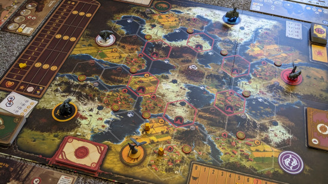
Scythe is a chunky strategy game that combines eurogame-style engine-building with some good-old-fashioned territory control. You're thrown into an alternate, sci-fi version of 1920s Eastern Europe, and you'll act as one of several factions that want to dominate the continent.
The way to do that? Control the most territory, construct buildings, beat up other mechs with your mechs, achieve secret objectives, hoard natural resources, and make sure your popularity score is high enough to multiply the value of other point sources. Add in faction-specific abilities and randomized player boards, and you've got plenty of strategy to chew on.
Scythe has a bit of a pacing problem at times, and it'll take strategy game newbies a while to master juggling all of its victory conditions. However, at the right player count, it's a puzzle well-worth investigating.
Read more in our full Scythe review.
Root
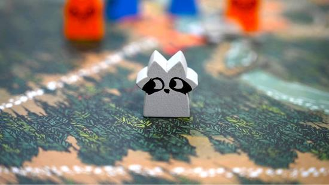
Root is the board game that convinced me to love wargames, and it's absolutely because I was sucked in by the adorable animal factions. This is an asymmetric, faction-based game of battle and area control where woodland creatures fight to claim control of their local forest. It's as cute as it is cutthroat.
Each animal faction offers a different playstyle and a unique way to win victory points. While the Marquise de Cat races to gather resources and construct buildings, the Eyrie Dynasties harvest points from an elaborate engine-building exercise. The Woodland Alliance starts with no board presence, but they can tear another faction apart from within by sparking rebellion. Meanwhile, the Vagabond is just a silly little racoon, trading items and siding with whoever seems strongest at the time.
That's before we throw any of the expansion factions in. With so many ways to play, Root rewards a gamer that is willing to return to its woodlands over and over, picking up different tricks along the way. It's strategically rich, it's thematic, and it's gorgeous to look at.
SETI: Search for Extra Terrestrial Intelligence
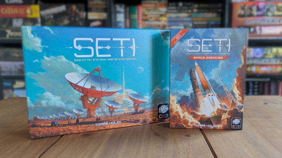
SETI is as gorgeous as space board games get, but it's more than just a pretty box with a rotating solar system. It's quickly become my favorite eurogame of all time, and the Space Agencies expansion only adds to the yes-ness.
Your ultimate goal is to discover alien life, but because this is a strategy game, your ultimate ultimate goal is to net the most points while doing so. That means landing on planets, scanning the stars, researching new tech, and upgrading your player board all the while to make each action more efficient. Aliens are cool, but you know what's cooler? End-game bonuses.
This is a modern euro that respects your time and isn't afraid to throw a bit of pizazz in with fancy components. Honestly, I don't have a bad word to say about it. A must-play for euro fans, and still worth checking out if complex points salads aren't usually your thing.
Read more in our SETI review.
Viticulture
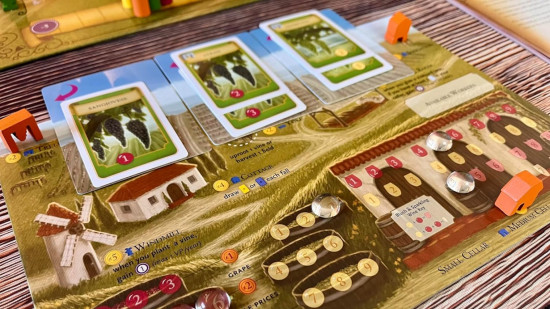
Viticulture is an approachable mid-weight eurogame, perfect for newcomers to the genre as well as seasoned veterans. It's a pure economic worker placement that tasks you with managing the best vineyard in all of Tuscany. That means planting and growing grapes to later bottle as premium wine of all kinds, as well as giving guided tours of your blossoming business.
You and your rival vineyards must compete for action spaces in order to further your goals, with rewards available for the first worker that completes an action. The actions available change with the weather, so it's important to pay close attention to the seasons. Build structures, fulfill wine orders, and expand just enough that your profit margins are more impressive than everybody else's. It's a thoughtful (and, dare I say, elegant) game that doesn't outstay its welcome.
A Feast For Odin
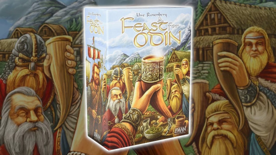
A Feast For Odin is a worker placement with so many actions to take that it's easy to get overwhelmed by choice. You'll play as Vikings, but you'll do far more than raid and pillage. Your main goal is to stock your settlement (your personal player board) with goods and resources. These generate income, but you'll need to farm (or, yes, raid) to fill your coffers.
Overcome the initial learning curve, and you'll find this is a tile-based, engine-building board game stuffed with interesting decisions and multiple ways to win. If you're good at arranging and optimizing, and you're willing to take a few risks, you're onto a winner.
Best thematic board games
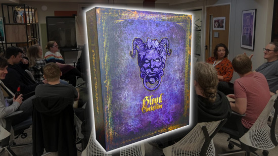
The term 'thematic' covers many board game genres, because it's less about the mechanics and more about the atmosphere they create. These games' rules might perfectly capture the spirit of their concept, or they might create tension in a way no other board game can. Some are simple, quick affairs, while others take over your life for months at a time. All are brilliant.
Blood on the Clocktower
My favorite board game of all time, Blood on the Clocktower is a rich, strategic, innovative take on the tried-and-tested social deduction board game. It marries cheeky bluffing antics and complex mechanics in a way that'll please casual party game lovers and fans of brain-warping strategy board games. It's pricier than other social deduction games on the market, but there really is nothing else like it out there.
In Blood on the Clocktower, everyone has a secret power, role, and alignment. Someone is a demon who, with some aid from their minions, kills innocent townsfolk at night, when everyone has their eyes squeezed shut.
During the day, it's up to the good team to investigate, querying their neighbors and choosing who to execute as the sun goes down. Kill the demon, and good prevails! But allow the murders to go on for two long, and evil will eventually outnumber the villagers - and put an end to them all. Tense and silly in equal measure, this is an addictive, replayable gem that more than justifies its luxury price.
Read more in our Blood on the Clocktower review.
Frosthaven
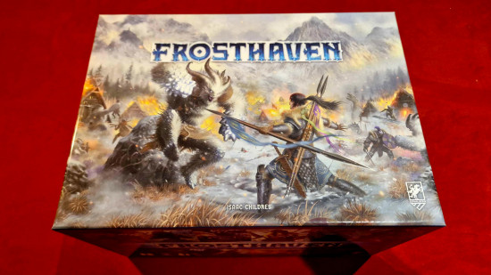
Gloomhaven's younger yet bigger brother, Frosthaven is an expansive dungeon-crawling RPG that needs hours of commitment to complete. It's an adventure worth embarking on, though, as few board games can match the challenge, immersion, and satisfaction it offers.
When you're not building a snowy base, you'll hop from dungeon to dungeon, fending off seemingly endless combinations of monsters. Objectives are varied, and loot is always on the table, which is handy for all that base-building you'll be doing. Your actions are decided by two cards played each turn, one with its top action resolving and the other its bottom. Combat damage is also determined by cards rather than dice, a eurogame-inspired design choice that reduces randomness and makes this puzzle of efficiency even more strategic.
Read our Frosthaven review to learn more.
Pandemic Legacy: Season One
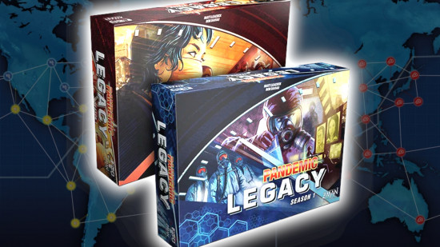
Pandemic Legacy nailed the legacy board game format so hard, it's been tough for rivals to top it. It turns the original Pandemic, already a cinematic co-op classic, into a sprawling campaign that changes based on how you play. Cards will be torn up, and stickers will be applied - all in your quest to stop a range of diseases from devastating the world.
The Pandemic series has a real knack for turning cube-based epidemics into epic storytelling. This instalment in the series uses monthly objectives, character upgrades, and long-term events to up the tension and create something comparable to an edge-of-your seat, bingeable TV series.
Betrayal at House on the Hill
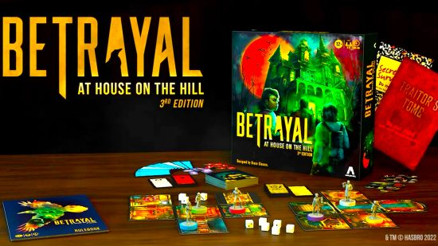
Betrayal at House on the Hill isn't the most balanced game, but no game has ever captured the haunted house theme as well. You'll play as Scooby-Gang-style teens exploring a creepy abode, taking turns to lay procedural rooms, pick up items, and witness sPoOoOoOky events. The house grows as you go, and when it gets fat enough, it begins to hunger for something new - your lives.
Eventually, a Haunt will begin, and the specific layout of the house determines what storyline you discover. Your team gains a new objective, which usually involves escaping the place with your lives. Someone also tends to turn traitor thanks to a sudden ghostly possession/bout of madness/encounter with a haunted realtor. Betrayal at House on the Hill hits every genre of schlocky horror, and the stories it tells are always hugely exciting.
Read more in our Betrayal at House on the Hill review.
Eldritch Horror
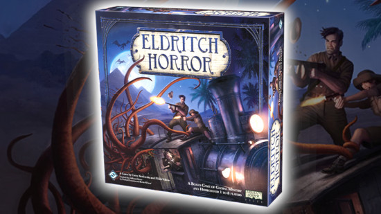
Eldritch Horror is one of many excellent games in the Arkham: Horror line. Each turns you into a ragtag group of supernaturally curious investigators who are given the simple task of (checks notes) stopping an Elder God from destroying the world. Did I say simple? I meant arduous, brutal, and sometimes damn-near impossible. That might sound like a slight, but the immense challenge of Eldritch Horror is part of its charm.
Eldritch Horror takes you on a globe-trotting adventure where you'll fend off cultists, dispatch abominations, and close portals to eldritch locales. All the while, the Big Bad Elder God is growing in power and getting ready to wake up. You'll want your health and sanity as high as possible if you have a hope in hell of stopping it from wreaking world-ending havoc, so work quickly, plan carefully - and pray to the gods that luck is on your side.
Spirit Island
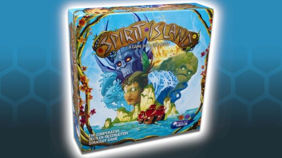
Spirit Island is a co-op where an island's elemental spirits must work together to repel eager human colonizers. It turns a classic board game theme on its head in a way that's innovative, emotive, and downright enjoyable to play.
Each turn, everyone plays a power card simultaneously. Move quickly, and you can shake the earth and shape the seas before the invaders spread, but slower, more careful movements will need time to set up. The invaders will expand across the island, but you'll grow in power, too, unlocking new ways to heal the fear and blight these people bring. Victory sees you successfully scare the invaders off the island, but if you're overwhelmed by blight, time, or attacks on a spirit, the colonizers seize the land for good.
Nemesis: Lockdown
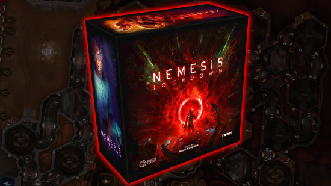
The Nemesis series (or, as I like to call it, legally distinct Alien) offers some of the best thematic board gaming in the modern hobby. Each entry in the trilogy is beloved, though Nemesis: Lockdown is my firm favorite (so far - I haven't had a chance to play 2025's Nemesis: Retaliation yet).
You and your crew are trapped on a Mars base with a hostile alien lifeform. The aim is an obvious one: escape. Working together makes survival more likely, but be careful who you trust, as everyone has their own private objective that they must fulfil to win. That might be gathering precious knowledge, or it might be something dastardly in service of The Company - often leaving another player for dead.
Lockdown is a tense, cinematic game of fire fighting, alien fighting, and sometimes friend fighting. It perfectly captures the spirit of that action-horror movie series that, I swear, this game is in no way related to.
Sky Team
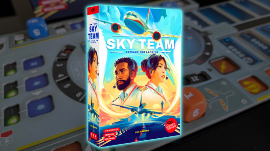
Sky Team is the best two-player board game on the market right now. Thematic and tense, it tasks you and a co-pilot with landing a plane. The task requires hair-trigger precision, careful planning, and some very lucky rolls in your personal pool of dice. It's these dice, rolled at the start of each round, that are spent to flip switches, fire the engines, and keep the plane level. Some values can only be used for certain tasks, while other tasks must be performed in the correct order.
That's a lot of constraints, but there's one big one I haven't mentioned yet. Once the dice are rolled, you and your co-pilot cannot speak. Each player's private pool of dice is secret, so you must use pre-roll planning and intuition to make sure each task gets done on time. Slip up once, and the plane crashes - game over. Sky Team is the ultimate compatibility test, and it's an exhilarating exercise in cooperation.
Learn more in our full Sky Team review.
Sherlock Holmes: Consulting Detective
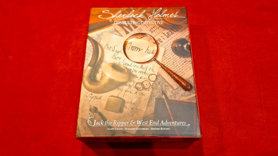
Sherlock Holmes: Consulting Detective is a compelling and immersive whodunnit that puts an interesting spin on mystery board games. Each case that the esteemed (and slightly condescending) Sherlock sets you plays like a choose-your-own-adventure book.
Examine your evidence, and pick a lead to follow, turning to the relevant page of your case book. This contains interrogations and investigations to read aloud, so the twists and turns of the mystery unfold organically. A thorough examination of the facts will be rewarded by the truth. However, there's an (in our eyes, optional) element of time pressure here too, as Sherlock is far more impressed by sleuths who solve the case in as few moves as possible.
Read our Sherlock Holmes: Consulting Detective review to learn more.
Twilight Imperium
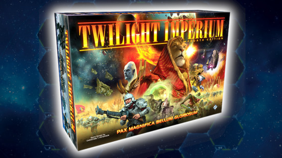
One of the beefiest board games there is, Twilight Imperium offers the perfect balance of theme and strategy. You'll need to invest an entire day if you want to play, but your reward is a vast, varied space opera, with tense negotiations, tight battles, and endless strategic decisions to make.
You'll act as one of 17 space factions looking to dominate the galaxy. Mechanically, that means being first to gain 10 victory points. Many of these are gained through objective cards, but the requirements could include mastering anything from spaceship skirmishes to inter-faction trade. Each faction has unique abilities, and the board is modular, so Twilight Imperium never plays quite the same. It could be the only game you own, and you'd never run out of fresh experiences.
Best board games for families
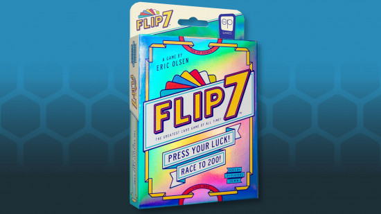
The best family board games can be enjoyed by players of any age. Don't discount this list if you're old enough to drink! Instead, consider it an arsenal of games to get your children, cousins, parents, or grandparents involved in your favorite hobby. Many of them are also perfect for parties, where an easy yet enticing game is most appealing. These games are simple in the most delightful of ways, and that often means they're addictive.
Flip 7
Flip 7 doesn't have a compelling theme, and it doesn't take much strategy to win. It can be taught in seconds, and games rarely last longer than 20 minutes. Despite all of this, it was one of my favorite games of 2024. A push-your-luck card game that innovates just enough on Blackjack, it's as moreish as a pack of premium cookies.
Flip 7's deck is made up of numbered cards. There's one 'zero' card, one 'one' card, two 'two' cards, three 'three' cards…all the way up to 12 '12' cards. These are shuffled, and each player is presented with the classic gamble: hit or stay. You can pull as many cards as you like, but if you ever draw two cards of the same value, you've gone bust. A handful of special ability cards might save you (or screw over another player), but otherwise, your fate dangles tantalizingly, totally at the mercy of the cards.
Codenames
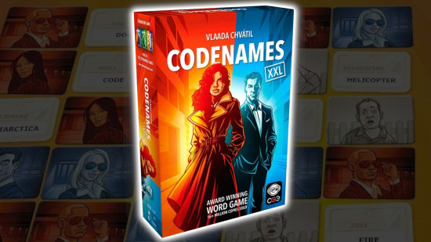
Codenames turns a simple word association exercise into a nail-biting game of espionage. Two teams of spies must correctly identify their allied agents, each of which hides behind a bizarre codename. Only the team's spymaster knows their true locations, and they can only drop hints in the form of single-word, single-number clues. Does "Garden, 2" point to "carrot" and "green", or could "spade" be on the cards?
It's a race that rewards careful, cautious clues, but there's more than enough room for Codenames to get silly. This ultra-simple word game has, in some hobbyists' eyes, been replaced by the more recent game, Decrypto. I, however, will always turn to Codenames when I want to introduce family and friends to my favorite hobby. It's quick, easy, and never gets old.
Read our full Codenames review to learn more.
Bomb Busters
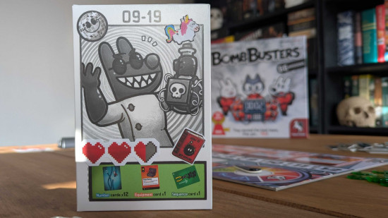
Bomb Busters was the most explosive board game of 2024, and not just because it's about defusing bombs. This is a co-op limited communication game that I'd compare most closely to Guess Who, but there's far more strategy under the hood than the iconic children's game.
Everyone plays an adorable bunny bomb buster, each with a row of numbered wires placed in front of them. You can't reveal your row to another bunny, but all wires must be cut to save the city from destruction. How do you achieve such an impossible task? Sweat, logic, and a few lucky guesses. You get a small slither of info to work with, plus some handy equipment to help. Each new mission ups the complexity, but it's nothing you can't handle! Right?
Read our Bomb Busters review to learn more.
Kingdomino
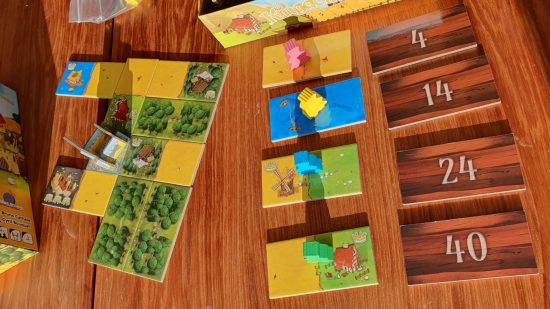
Kingdomino is a charming, colorful take on the classic tile-laying game it shares (half) a name with. You'll play as a monarch looking to expand their kingdom, and you'll score points for ruling over the richest, most diverse terrain possible.
To do that, you'll need to draft domino tiles. Each tile has two different terrain squares, and you'll mainly score points by connecting matching terrain squares. Tiles with crows on should also be a top priority, as they're needed to score - and multiply the scores of - different terrains.
A game of Kingdomino is over in 15 minutes, but you'll often be reaching for a second or third game. It's a moreish morsel that's ideal for introducing younger gamers to the hobby.
Learn more in our full Kingdomino review.
Jaipur
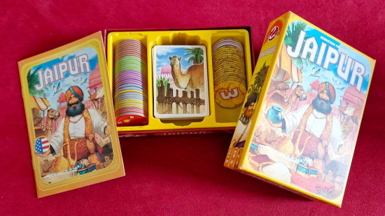
Jaipur is a compact two-player game where careful card management can earn you all the riches in Rajasthan. Two merchants compete to buy and sell the most tantalizing stock at their market stall.
Doing so is deceptively simple. On your turn, you can either add goods to your hand or discard a group of matching cards to earn a valuable token. Each good has a different market value, so you'll need to draft at the perfect time if you want to beat your competitors to the best products. The horde of camels that take up space in the market, too, can be a blessing or a curse, depending on when you add them to your personal herd.
For such a simple game, there's a surprising amount of strategy to mull over. It's a solid introduction to board games at large, and it's always an entertaining use of half an hour.
Read our Jaipur review to learn more.
Camel Up
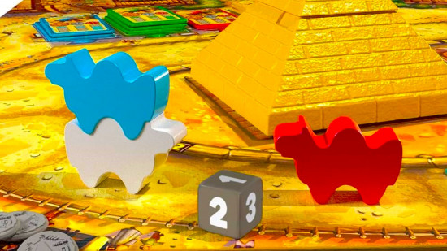
Camel Up is a racing game that's as stylish as it is chaotic. You'll bet on various legs of a grand race run by a herd of camels. Most of them manage to run in the right direction, but they can get a bit carried away - literally, as a camel that runs into another's space gets stacked on top of a growing camel tower.
You must boo, cheer, and bet often if you want to make the most money. You're also free to bet on who you think the overall winner is at any time, but you better be confident, because one roll of the dice could change the entire race. Luck is the lady of the hour, but despite the lack of tactics, Camel Up charms me with its lighthearted gambling antics and approachable rules.
Harmonies
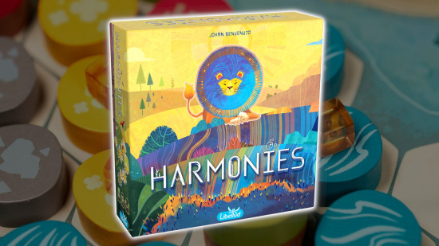
Harmonies is as soothing as competitive board games get. You're the steward of a landscape that wants to attract as many gorgeous animals as possible. To do that, you'll need to build the right terrain for them, whether that be trees, rivers, mountains, fields, or buildings. Attracting the most animals is a sure way to victory, but each piece of terrain offers a unique, additional way to score.
Each turn, you'll draft an animal card and/or a pool of three terrain tiles. These wooden pieces stack satisfyingly on top of each other to create more valuable landmarks. It's a thoughtful, tactile, somewhat solitary experience - so relaxing that, when everyone totals their final scores, winning feels like a bonus rather than the sole goal.
Read our Harmonies review to learn more.
One Night Ultimate Werewolf
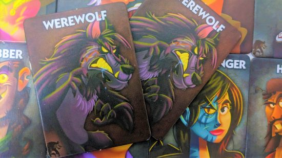
This is the best board game you can play in just 10 minutes. It's a mini game of social deduction, where players are assigned hidden roles and must question each other to uncover the hidden werewolf. Or, if they are the werewolf, they must bluff long enough to get someone else accused of their werewolf-y crimes.
It takes only a few minutes for the shouting and finger-pointing to begin. One Night Ultimate Werewolf is simple, but it's deliciously addictive. A handful of unique role powers throw even more chaos into the mix, swapping roles or giving certain players information at 'night', when everyone has their eyes shut. This is one I've played over and over for years, with various numbers of players, and I never get bored.
Learn more in our One Night Ultimate Werewolf review.
Monikers
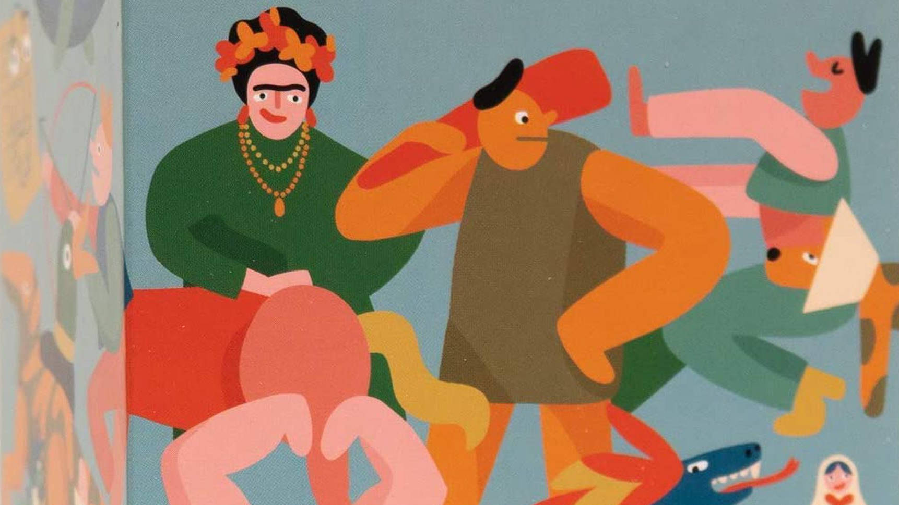
Monikers is a quirky take on the classic party game Celebrities, where you must describe something well-known to your team without naming it outright. This version turns that age-old formula on its head by giving you some of the strangest prompts we've ever seen, from Cthulhu to 'The lady who spilled coffee on herself at Mcdonalds'.
The first round plays out like a standard Celebrities game, but in the second round, each team must work with the exact same set of prompts - only with a single word. Round three is rinse and repeat, but you must now mime everything to your team, who'll need to use a combination of memory and confused squinting to work out what you're getting at. It's simple, it's silly, and it's perfect for a casual game night.
Skull
Another board game you could play on your lunch break, Skull is a snappy bluffing game that throws in some bidding mechanics for extra spice. It's a simple card game that has no right to be as engaging as it is, but it's one of my go-to games for parties, quick gaming sessions, or beginner-friendly game nights.
Everyone is handed a pile of cards that look like rock bar beer mats, some decorated with flowers and others with skulls. Players place one to two cards face-down in front of them, and then, someone starts the bid, guessing how many flowers they think are hidden among the cards played. Bidding increases until all players have bid or pass. The highest bidder must then reveal cards, in any order, equal to their bid. If any skulls are flipped, that player loses a card from their pool, but if it succeeds they can flip their flower mat. Flip that mat twice, and you win!
Whew, that was a lot of board games. How many have you played? Are any of your favorites missing? Let us know in the Wargamer Discord.
Originally published on Wargamer.


Leave a Comment